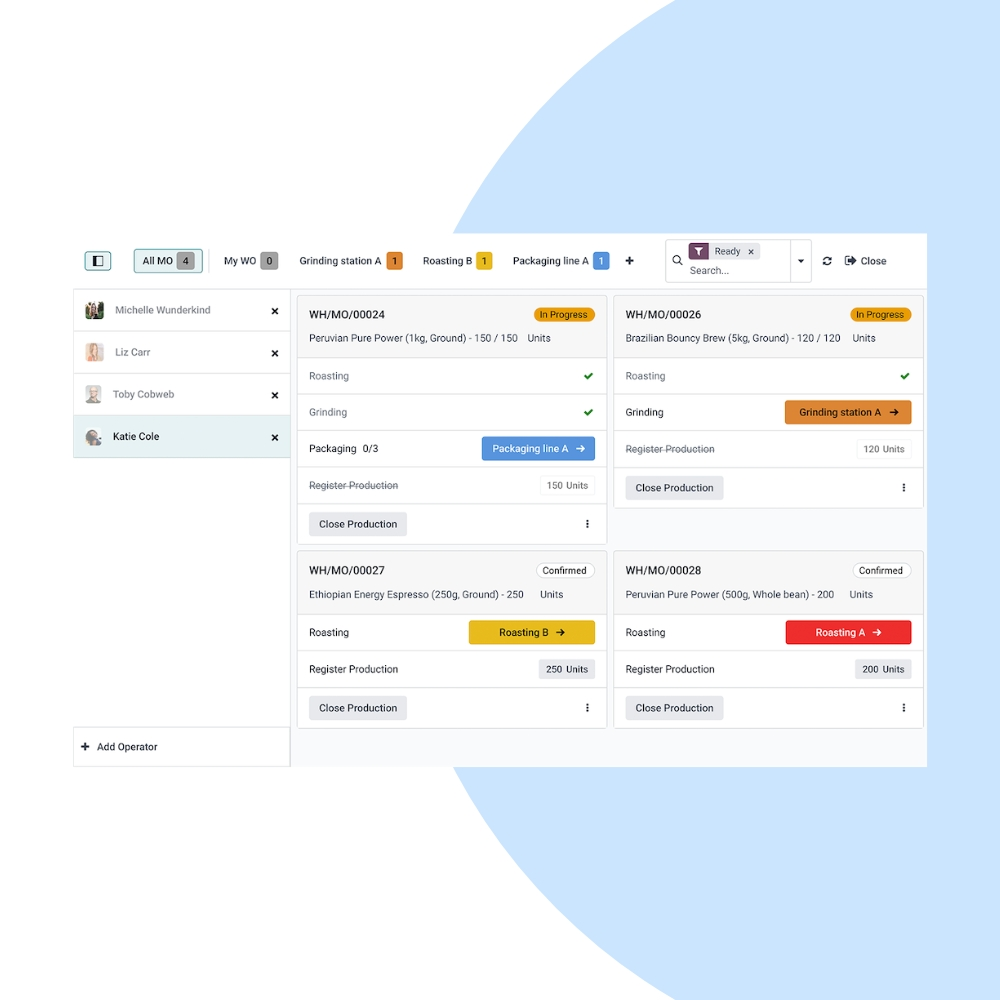
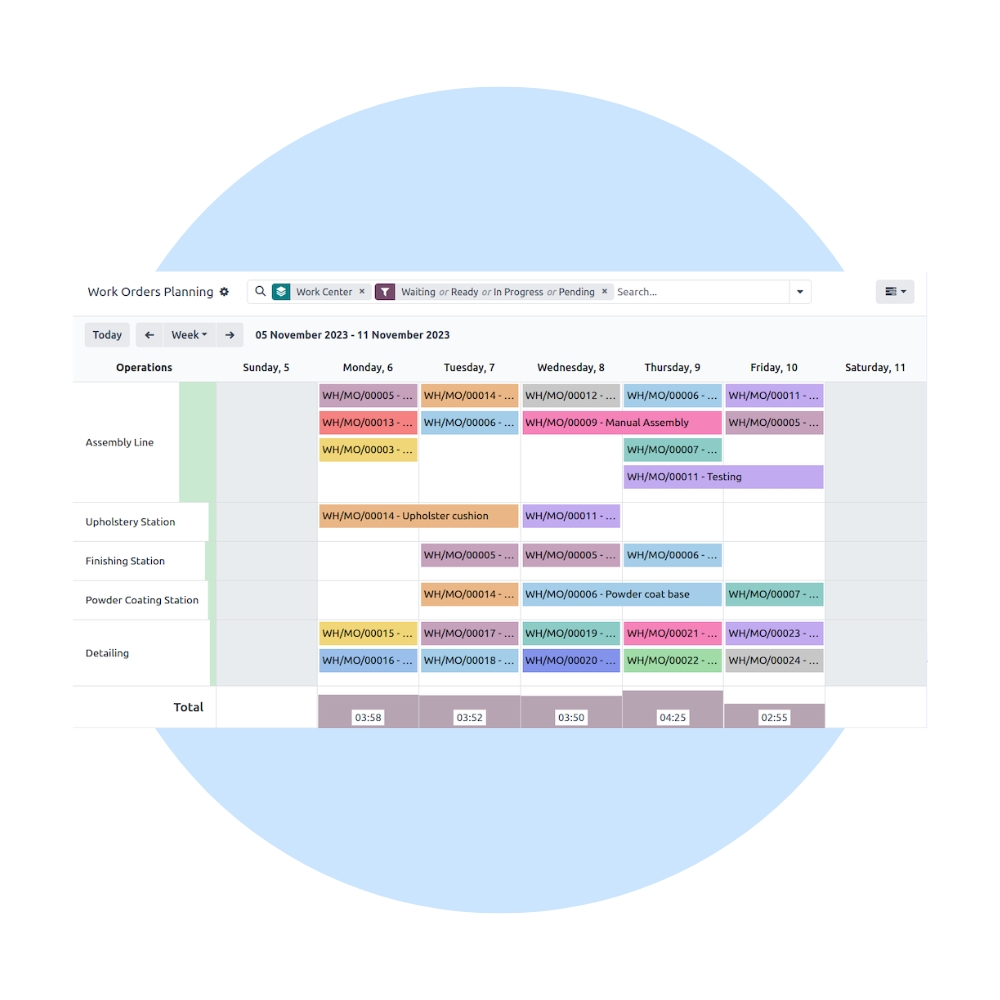
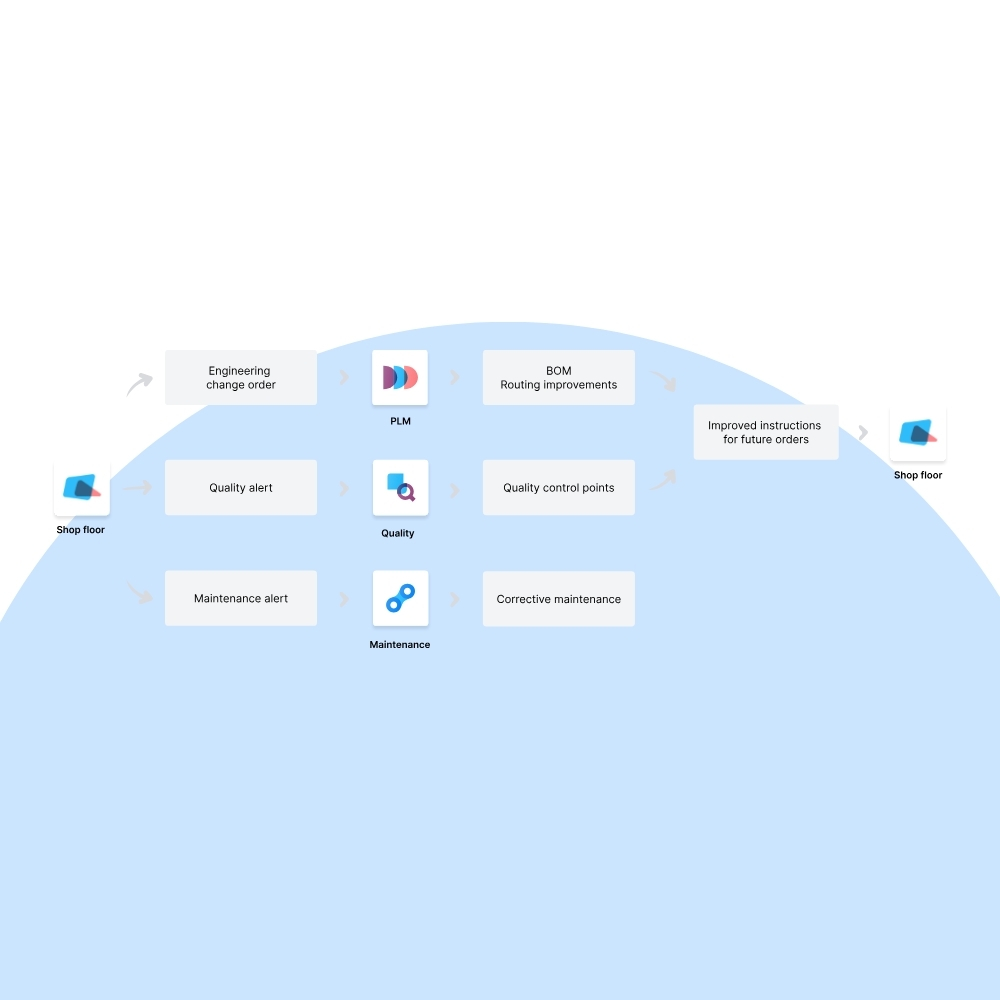

Optimize production with Odoo Manufacturing. We help manufacturers plan, execute, and track production orders, bills of materials, work centers, and quality checks in real time.
We configure Odoo Manufacturing to match your production processes, routing logic, and capacity planning. Integrate seamlessly with Inventory, Purchase, Quality, Maintenance, and Accounting.


Our implementation ensures efficient production planning, accurate material consumption, and complete visibility into production costs and performance.
Manage multi-level BOMs with versions and variants.
Track operations and progress on the shop floor.
Balance workloads across work centers.
Monitor production costs and margins.
Integrate quality checks and machine maintenance.
Connected with Inventory, Purchase & Accounting.
We continuously optimize manufacturing operations to reduce lead times, improve throughput, and increase production efficiency.
